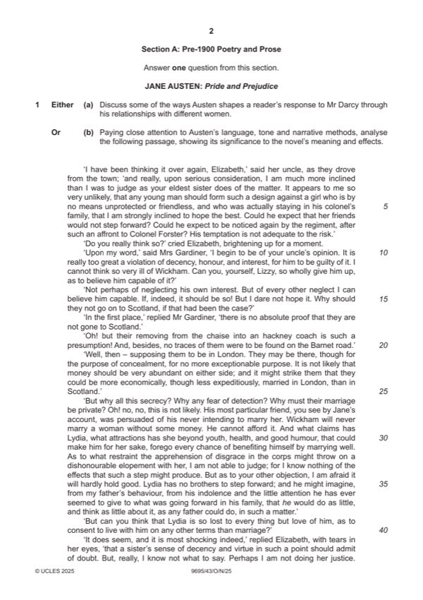

Question 1

Original paper page 2
Part 1(a) — solution
Answer: OR
Discuss some of the ways Austen shapes a reader’s response to Mr 25
Darcy through his relationships with different women.
Mark according to the levels of response marking criteria.
OR
Mark points
- Correct result: OR
Part 1(b) — solution
Paying close attention to Austen’s language, tone and narrative 25
methods, analyse the following passage, showing its significance to the
novel’s meaning and effects.
Mark according to the levels of response marking criteria.
GEOFFREY CHAUCER: The Merchant’s Prologue and Tale
EITHER
Mark points
- Include the ideas shown in the solution above.